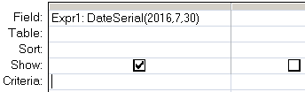

Returns a date given a year, month, and day.
Syntax
DateSerial(year, month, day)
Key
year Integer. Number between 100 and 9999, inclusive, or a numeric expression.
month Integer. Any numeric expression.
day Integer. Any numeric expression.
The interpretation of two-digit years will vary according to the versions of Windows. To be sure the function returns the proper value, use a four-digit year.
The DateSerial() function can be used in VBA or in an SQL query.
Examples
In a query:

In VBA:
Dim dtmArrival As Date
dtmArrival = DateSerial (2012, 12, 31)
“If you are planning for a year, sow rice; if you are planning for a decade, plant trees; if you are planning for a lifetime, educate people” ~ Chinese Proverb
Related:
Date - Return the current date.
DateAdd - Add a time interval to a date.
DateDiff - Return the time difference between two dates.